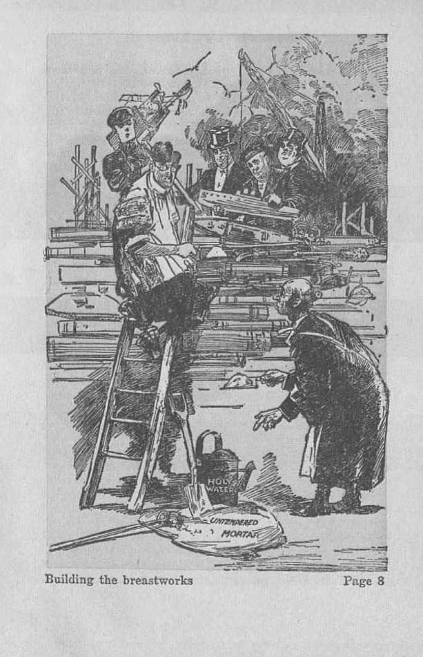
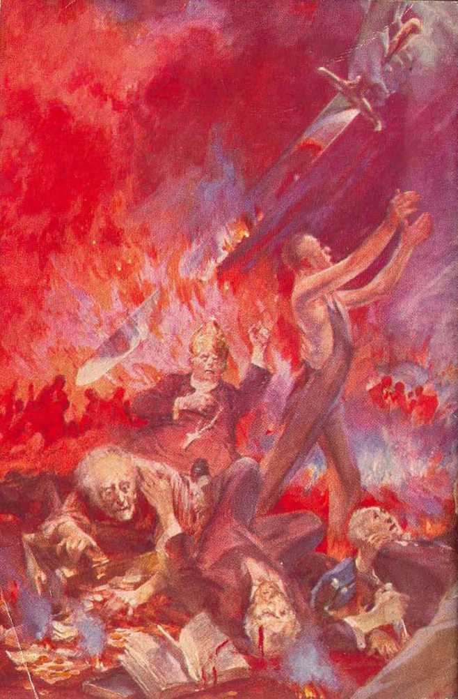

to the
explained in Three Bible Treatises by
J. F. RUTHERFORD
Page
3 The Way of Escape
24 Effect of Holy Year on Peace and Prosperity
44 Kingdom Blessings for the People
----— ----- . ■ -(•
PREFATORY NOTE
Based upon God’s Word, the contents of this booklet prove beyond nil doubt that the greatest war of the ages is rapidly approaching.
It shows that the efforts of the so-called “Holy Year” will provide no way whatsoever of escape.
The kingdom of God under Christ is here and discloses the way of escape and the blessings for all who obey its laws.
4---<■
COPYRIGHTED 1933 and Published by WATCH TOWER BIBLE AND TRACT SOCIETY International Bible Students Association Brooklyn, N. Y., IT. 8. A.
Branch Offices:
London, Magdeburg, Paris, Toronto, Strathfield, Cape Town, Berne, Copenhagen, Stockholm, and other cities.
Made in U.S.A.
'THIS speech is -Jw not an expres-'1 sion of man’s opinion.
IF it were merely the
expression of my opinion I would not expect, you to listen. It is a statement from the Bible, which is the Word of Jehovah God, backed up by facts well known to millions of people; and for that reason alone it commands the respectful hearing by every reverential person.
Hore than a century ago the peoples of the American continent believed the Bible to be God’s Word of truth, given for the instruction and guidance of man; and there are yet many good people who so believe, and to such this speech will be a message of comfort and good
cheer. Its effect upon those who are opposing Jehovah’s work on the earth will be anything but comforting.
This speech is not made for the benefit of the clergy, because they have ignored the Word of God and substituted therefor their own wisdom. They have been duly served with notice of warning and have closed their ears and their eyes to the truth and caused the persecution of those who brought to them the message of God’s kingdom. Further notice to them would be of no avail. This speech is not intended for the commercial giants nor for the political rulers, because they have heretofore been duly served with notice and given warning, and that information has been ridiculed by most of them, and they have given ear to the enemies of God and have hindered the further proclamation of His truth. Further information given to such opposers would be needless. There are a few men among them, however, who still have a hearing ear; and I hope that these may receive some benefit from this message.
When Jehovah’s covenant people were suffering from oppression in Egypt, God sent Moses as His messenger to give notice of warning to Pharaoh, the ruler of Egypt, and to comfort His own people. That message of warning was from Jehovah, and Moses was merely His servant to bear the message. When Pharaoh rejected the message of warning Jehovah said to Moses these words: ‘ ‘ Speak now in the ears of the people.” Likewise the time is now at hand when the rulers have rejected God’s message and in accordance with His will the people must hear and have an opportunity to take their stand.
The peoples of the nations of earth are now in great distress and perplexity. They are greatly in need of encouragement and consolation, and Jehovah God has a message of consolation for them. It is to the people of good will I now address this speech. You must now
learn what is the real cause of the present distress upon the world, what may be expected to follow shortly, and what course you can take for your safety and preservation,
Please be assured that I have no controversy with the clergymen nor with the political or commercial rulers. My sole duty is to speak the truth. If you believe in Jehovah God and His Word of truth you will appreciate the fact that Jehovah has given commission to all who have devoted themselves to Him, and this commission they must perform. Christ Jesus is the great “faithful and true Witness” of Jehovah, and all those who are the true followers of Christ Jesus now on earth are Jehovah’s witnesses and must bear testimony. The commission definitely given to all such is set forth in Isaiah 61:1, 2, and, among other things, says to His anointed: ‘Jehovah God has commissioned you to preach the good news unto the teachable, to proclaim the day of the vengeance of God against all wickedness, and to comfort all that mourn.’ God’s vengeance is against Satan and his entire organization; and when He sends His witnesses out to declare this message of truth, and they fail or refuse to obey, His witnesses shall die. (Ezekiel 3:18) Those who really love God prove it by obeying His commandments regardless of what men may think, say or do.
Now as to some of the facts which you well know and which have to do with the fulfilment of divine prophecy. The World War began in 1914 between the nations called “Christendom”. Eighteen hundred years before that the Lord foretold that war and that it would be the first evidence of the end of the world. During that World War the ruling elements invented and caused to be shouted throughout the earth the slogan: ‘‘ The war will make the world safe for democracy. ’ ’ That slogan was a false prophecy. Today there is not one democracy on earth, but most of the na-
nations are ruled by dictatorial power, I am not here criticizing the dictators, but merely citing the facts. Millions of men were preached into, urged and driven into the World War, and most of the survivors arc now in want and suffering for the necessities of life. In a land where there is said to be too much food, too much raw material for clothing, too many houses, there are at the same time millions who arc in great need of food, raiment and shelter, and are unable to enjoy these necessities. Everyone knows that there is something wrong.
Today the rulers are desperately trying to pull the countries out of the state of depression and to prevent the ship of state from going on the rocks. Let it be conceded that such rulers are doing the very best they ean according to human wisdom. They are disregarding divine wisdom. They may succeed in a measure and there may follow a short period of material prosperity and, if so, that will cause the rulers to become more arrogant and to further ignore or defy Jehovah God and His kingdom. If material prosperity does come to you, and you have relief even for a short time, I shall be glad; but do not. be deceived thereby nor let anyone turn you away from the truth of God’s Word. Whatever material prosperity comes, it will be followed by even greater distress. There is no earthly power that can pull the nations out of their present dilemma. •
The nations of "Christendom” in recent years have made numerous peace treaties in an attempt to safeguard the world from war; and Jet it be conceded that they have done this with a sincere desire for peace. The facts, however, are that at this time all the nations are arming to the teeth and are desperately preparing for war, and expect war, and they know not the reason why. Fear has taken hold upon all of them and they Quail and tremble because of what they sense is coming upon the world.
God’s Word of truth plainly points out that the most terrible war, and the greatest death toll ever taken, is in the very near future. Jehovah God Jias laid upon His witnesses the obligation to now make known these facts to the people. The Bible gives plain proof as to the reason for this coming war and what wilt be the result, and plainly points out what is the only way for you to escape and preserve yourselves and live. The message, therefore, is of vital importance to every one who desires to live.
When God made the earth and placed perfect man upon it He appointed Lucifer as overlord or god of the earth. Lucifer rebelled against God, and then his name was changed to that of Satan and Devil, by which he is ever since known. Satan declared lie could cause all men to curse Jehovah G'od, and therefore he challenged God to put men on earth who would remain faithful and steadfastly devoted to God under the most severe test. That challenge raised the question before all creation: Who is supreme, Satan or Jehovah God? In order to give Satan the opportunity to prove his boastful challenge God accepted that challenge and has permitted the Devil to do all within his power to carry out his threat. At the same time Jehovah promised that in His due time He would send to earth His beloved Son Jesus as the Redeemer, Deliverer and King and that He should become the Ruler of the world, oust Satan, destroy his power, and establish a government of righteousness for the benefit of the people that all might know Jehovah is the Almighty God. In 1914 that due time of waiting came to an end, and God immediately installed Christ, Jesus as the King of the world. There followed a war in heaven between Christ Jesus and the Devil, resulting in ousting the Devil from heaven and the easting of
him to the earth. Although invisible to human eyes, Satan and his hordes have continued to operate amongst rulers and the peoples of earth.
Satan the Devil pushed the nations of the world into the great war for the very purpose of causing their destruction rather than to see any man serve God. That war would have gone on until the race was entirely annihilated had not God stopped it. The great, distress, perplexity and suffering now upon the rulers and upon the peoples of earth is directly chargeable to the Devil, and the Devil is using all his power to keep the people in ignorance of that truth. Jehovah God is in no wise responsible for the sorrows and troubles that now afflict you. Satan’s purpose now is to turn the people away from God, and lienee he causes them to suffer great woe, distress and perplexity; and his earthly representatives, particularly the clergy, tell the people that God is responsible for their sufferings, and those who believe such statements turn away from God. We are not left in doubt as to who is responsible for the world’s present woes. In Revelation, chapter twelve, appears the record concerning Satan’s being cast to earth, and then these words are added: “Woe to the inhabiters of the earth, and of the sea! for the devil is come down unto you, having great wrath, because he knoweth that he hath but a short time.” (Revelation 12:12) As this scripture says, Satan knows that soon the groat war is certain to bo fought and that he has but a short time to prepare for it. For this reason Satan is now inducing the nations to make extensive preparations for war. In that war Satan purposes to destroy every creature that takes his stand on the side of Jehovah God and His King Christ Jesus. For that reason Satan induces his representatives on the earth to violently oppose every effort to bring to the people a knowledge of the truth. Without doubt many of these opposers
Building the breastworks
Page 8
1
are blind to the truth themselves; but they are serving Satan, notwithstanding that ignorance.
Jehovah caused the World War to stop in 1918 for the express purpose of affording an opportunity for the people to hear the, truth of and concerning Him and His kingdom. If anyone doubts this statement, read the words of Jesus recorded in Matthew 24:14, 21, 22. Since then God has sent forth His witnesses to give the peoples of earth the needed information concerning the cause of the trouble and what will be the result; and for that reason not only has Satan used his earthly agents to hinder these witnesses of Jehovah, hut he would destroy every one of them except for the protection given them by the Lord. While Jehovah’s witnesses are declaring in the earth the truth of and concerning Jehovah and His kingdom and His day of vengeance, the preparation for the great war continues and the battle draws nigh.
Up to the present time Jehovah God has not. taken a hand in the troubles that are afflicting the peoples of the world. His time to tight, as stated by Him, is at the battle of Armageddon, otherwise, called in the Scriptures the “battle of that great day of God Almighty”. The reason for that great battle is this: Jehovah’s time has come to set up among men on earth His righteous governments and this He docs in fulfilment of His promise made long ago to establish on earth peace and good will toward men. That government of Jehovah under Christ will completely fulfil the fondest desire of every honest person. Before, that, happy condition can be brought about, however, the Devil and his power and influence must be completely destroyed; and that means the destruction of his entire organization. The people must be free to serve God in righteousness and without interference, and this can be done only after Satan’s rule has come to a complete end.
From the time of the rebellion in Eden till now Satan, the Devil has been the invisible ruler of this world, and that wicked rule must end before peace and righteousness can come to stay. Everybody knows that the visible rulers of this world are mon who are very imperfect. Today money is the great power amongst the nations; hence the commercial element, is the strongest and exercises the greatest influence over the other ruling factors. The political rulers find 1 hat they must yield to the influence of the commercial interests. Ilas anyone a doubt that the clergy arc engaged in the politics of this wicked world? You all know that the clergy participate in the political affairs of this world, and therefore they constitute a part of the world. Catholics, Protestants and Jews now unite in an effort, as they announce, to bring peace and prosperity to the world and, according to their own declaration, they utterly ignore Jehovah God and His kingdom and substitute therefor their own means of accomplishing that purpose. They call upon the name of God but. entirely disregard His Word and His kingdom. Even though the rulers set fixed days to pray to be heard of men, God will not grant their prayers. The three ruling elements of the world arc: commercial, political and religious. We know that this world is very unrighteous; therefore it could not be God's world, and we could not expect God to bless it. It is just exactly as Jesus and the apostles said, that the Devil is the invisible ruler and he blinds the visible rulers and the peoples to the truth.—John 12:31; 14:30; 2 Corinthians 4:4.
If the clergy represented Jehovah God and His kingdom they would refuse to have anything to do with Satan’s world, but would hold before the people the truth of and concerning God’s kingdom and would show the people that God’s kingdom is their only means of relief. When the League of Nations was brought forth the clergy endorsed it, and have likewise endorsed every peace pact made since then as a means of recovering the nations of the world. The Scriptures say, at Romans G: 16: ‘Ye arc the servants of him whom ye serve.’ It is easy for you to determine, then, whom they serve. The clergymen are friends of this world, because they arc a part of it; and hence according to the Scriptures and the facts they serve the Devil and not God and Christ Jesus, and this is proved by the following scriptures: “The friendship of the world is enmity with God; whosoever therefore will be a friend of the world is the enemy of God.” (James 4:4; John 8:44) You will observe that I am not slandering or abusing the clergy, but merely stating the facts which you know to exist and citing the inspired words of the Lord in explanation of those facts. My only purpose in making mention of the clergy in this connection is that the people may see the truth and not be misled into Satan’s trap. Eceausc Jehovah’s witnesses arc wholly devoted to God’s kingdom under Christ, the agents of Satan oppose the message or testimony of Jehovah which these witnesses bring to you.
The great war is now rapidly approaching. At Revelation, chapter sixteen, it is written that Satan is gathering all nations to Armageddon to the battle of the great day of God Almighty, and that war will involve the whole world, and especially will involve the nations known as “Christendom”. “Christendom” will suffer the greatest calamities and loss, as the Scriptures plainly state. The reason that the war is called “Armageddon” is this: “Armageddon” means ‘the place of assembly of Jehovah’s troops’. Jehovah God lias assembled the true followers of Christ Jesus and brought them into His organization, as shown by Revelation, the fourteenth chapter. Christ Jesus is Jehovah's chief executive officer, and His great war
field marshal. Jerusalem is a symbolic name given to Jehovah God’s organization. In Zechariah 14:2 Jehovah says: “I will gather all nations against Jerusalem to battle.” That means that Jehovah assembles His own forces under Christ, and by His skillful maneuvering He compels Satan to bring his army up against God’s organization, and hence God forces the fight at Armageddon. Satan the Devil is causing the nations of the earth to prepare for war for that very reason, and Satan is setting them all against God and His kingdom; and for this reason you observe that the world continues to increase in oppression, wickedness and suffering.
"When these mighty contending forces are fully in battle array, then Jehovah God will begin the war, the leadership of His forces being under Christ Jesus. In Zechariah 14:3 it is written: “Then shall [Jehovah] go forth, and fight against those nations, as when he fought in the [days of old].” That means what it says, that Jehovah God with His great and invincible army will fight against all the nations in Satan’s organization, and which oppose Jehovah God; and that includes all the nations of “Christendom”. It is in the land called “Christendom” where the chief opposition is made to prevent the people from hearing God’s Word of truth. In Canada, which is a part of “Christendom”, men holding high official positions have prevented the people of that land from hearing God’s message by radio. You well know that in doing this such men have not acted in behalf of Jehovah God and His kingdom, but do act in behalf of God’s enemies. I will not dignify the head man of that Commission by making mention of his name. He has not injured and cannot injure me, because the message which I deliver is not mine. He is fighting against God. A free people, capable of determining what they may hear, have been deprived of their just rights to
hoar what they need in this hour of great distress; and, above all, Jehovah God has been defied and Eis Word and name defamed by that self-constituted censor residing in Canada. Jehovah God will duly recompense that wicked man and his wicked associates and advisers. Ue admits that the clergymen are his advisers and that these men are pastors and shepherds of various religious congregations. That man and his associates constitute the principal ones of the clergymen’s flocks. The fate of such men Jehovah God has announced, and I will call your attention to that fate in a moment. It would therefore be out of place for me to indulge in vituperative language against; him oi’ against any other man. Vengeance is Jehovah's, and He will execute His judgment against His enemies.
In days of old, as the Scriptures and facts show, Jehovah God fought against the nations that opposed Him and that oppressed His covenant people. At the battle of Gibcon Jehovah threw down great, chunks of iee from the heavens and slew a multitude of the enemy, and He made the sun and the moon to stand still while Joshua finished the slaying job. There lie -fought for His people, and He will fight for them again at Armageddon.—Joshua 10:10-13; Isaiah 28:21,
When Jabin and Sisera attacked God’s covenant people under Barak, God caused the flood of the rivers to sweep away multitudes of the enemy, and the powers of heaven destroyed them in that war. (Judges 4 and 5; Psalm 83:9) When Sennacherib brought his army before Jerusalem and defied Jehovah God, 185,000 of his soldiers instantly died. (Isaiah 37:3338) These ancient wars are recorded in the Bible, as stated at 1 Corinthians 10:11, as mere samples showing what shall come to pass upon the nations of “Christendom” that oppose Jehovah and gather together against God’s organization at Armageddon.
The great battle of the day of God Almighty, as compared with others, will cause all other wars to appear as small or tame affairs. Concerning that war at Armageddon it is written, in Jeremiah, chapter 25: “ [Jehovah] hath a controversy with the nations; . . . he will give them that are wicked to the sword.” (Jeremiah 25: 31) Continuing to describe this coming battle of Armageddon, God’s prophet Jeremiah says: “Thus saith the Lord of hosts, Behold, evil shall go forth from nation to nation, and a great whirlwind [of trouble] shall be raised up from the coasts of the earth. And the slain of the Lord shall be at that day from one end of the earth even unto the other end of the earth: they shall not be lamented, neither gathered, nor buried; they shall he dung upon the ground. Howl, ye shopherds, and cry; and wallow yourselves in the ashes, yc principal of the flock: for the days of your slaughter and of your dispersions are accomplished; and yc shall fall like a pleasant vessel. And the shepherds shall have no way to flee, nor the principal of the flock to escape.” (Jeremiah 25:32-35) Thus the Lord definitely states that the shepherds and pastors, and the principal of their flocks, and the censors that now oppose His message and His kingdom, shall fall and find no way of escape.
By His prophet Ezekiel Jehovah declares that the armies of the world shall fall by the sword, by famine and by pestilence. (Ezekiel 6:11) Further describing the terrible slaughter and the means of destruction, Jehovah God by His prophet Zechariah says: “And this shall be the plague wherewith the Lord will smite all the people that have fought against Jerusalem [Jehovah’s organization]; Their flesh shall consume away while they stand upon their feet, and their eyes shall consume away in their holes, and their tongue shall consume away in their mouth.”—Zechariah 14:12.
In further proof that Armageddon will be the greatest war and most terrible slaughter ever known to man, Jesus says: “For then shall be great tribulation, such as was not since the beginning of the world to this time, no, nor ever shall be. And except those days should be shortened, there should no flesh be saved.” ■—Matthew 24:21,22.
Jehovah’s witnesses are now merely calling attention to the fact that Jehovah is the great God, and Christ Jesus is King; and these witnesses are endeavoring to comfort the people of the world by bringing to them a knowledge of God’s purpose of relief and protection for those who take their stand on His side. Jehovah’s witnesses are giving this information to you in obedience to Jehovah’s commandment. Now these witnesses are hastening through the land and amidst great opposition and at much cost and inconvenience to themselves, in order to bring to you the message of the Kingdom. They are not complaining, but, on the contrary, are rejoicing and giving thanks to God for this privilege of service.
escape
In the twenty-first Psalm it is written that Jehovah God will find out all His enemies and shall destroy them at Armageddon and none shall escape. Are you an enemy of God or arc you His friend? The scripture is plain in these words: ‘A friend of the world is the enemy of God.’ (James 4:4) No nation or government of this world is a friend of Jehovah God. The only way to become God’s friend is to take a stand on His side and for His kingdom under Christ. Satan's world has come to an end, and the people must be either for Satan or for Jehovah and His kingdom. The time has eome when all persons must now make their choice. Pharaoh, the ruler of the first world power, defied Jehovah God, and his organization was destroyed. Other rulers and public officials now on the earth have defied Jehovah God and have refused to hear His message, and prevent others from hearing; and God declares that as His enemies they shall meet a like fate. Men in public office may publicly speak Jehovah’s name and call upon Him to sustain them, but their call will be in vain, because he who now serves God must do so in spirit and in truth. Thore can now be no compromise by serving this world and asking Jehovah’s help, because the time is here to vindicate Jehovah’s name by destroying Satan’s organization.
A few men may control all the money of this world and all the offices and exorcise all the power of government, but these things will avail them nothing at Armageddon. These rulers have allied themselves with the shepherds or pastors of hypocritical religion; and as long as they do this, Jehovah declares that they are His enemies and shall find no way of escape. Before they could find a way of esea'pe they must separate themselves from hypocritical religion.
What, then, is the way of escape from destruction in this great war just ahead? Man’s answer to that question would amount to nothing, but God’s answer is true and certain. In Zephaniah, chapter two, Jehovah God answers that question and tells the people who become His friends what is the only way of escape. To all such He says: ‘Gather yourselves together, 0 ye nations [peoples] not desired. ’ Who are such that are not desired by the rulers of this world? All those who are opposed to Satan’s oppressive and wicked rule and who love Jehovah God and righteousness and desire to see His government of righteousness established. There are millions of such good people in the land. Further quoting from that same scripture: Jehovah says: “Before the decree bring forth, before the day pass as the chaff, before the fierce anger of the Lord come upon you, before the day of the Lord’s anger come upon you. Seek ye the Lord, all ye meek of the earth, which have wrought his judgment; ... it may be ye shall bo hid in the day of the Lord’s anger.”—Zephaniah 2: 2, 3.
The meek are those who are teachable. No one can be taught without hearing facts; and in some parts of the seventh world power the people are prevented from hearing the truth by radio. But I am going to tell you in a moment of God’s provision for even them to hear. All persons in “Christendom” must now shortly take their stand cither for or against Jehovah God’s kingdom, and all who escape and arc brought through that great war and live must seek t he truth, take a firm stand on Jehovah’s side, and do what is right. How can I seek the Lord, you ask? By putting your trust in Jehovah as the only true God, and in Christ Jesus as the Redeemer, Savior and King of the world, and no longer trust to any worldly institution; then study God’s Word of truth, and the explanation which He has graciously provided, and learn what provisions Jehovah has made to bring peace, prosperity and everlasting life to those who serve Him. To make an honest endeavor to learn what God’s purpose is, as set forth in the Bible, is the proper way to seek meekness.
How may I seek righteousness? God’s ways are always right. (Psalm 19:7-10; 119:75) Ho declares that His "Word, the Bible, is the guide to the feet of everyone who wants to walk in righteousness. (Psalm 119:105) You must have a knowledge of what is in His Word. To enable you to get such knowledge Jehovah has brought about the fulfilment of His prophecies and caused these facts to be published, and now He sends forth His witnesses to tell yon how and where to find these truths. These witnesses bring to yon Jehovah’s message, and not the message of any man. Learn what is right and then do it.
What is required of those who please Jehovah? That question Jehovah by His prophet answers, in Micah 6: 8, saying: 'Do justly, love mercy, and walk humbly [that is, obediently] with thy God.’ That means to render justice to all and do injustice to none. Love mercy and be merciful toward others and, above all, obey Jehovah God, and not man. When you gain this knowledge you must not keep it to yourselves solely, but must tell others abo.ut Jehovah and His kingdom for the blessing of mankind and thus show your love for God and for your fellow man. If men command you that you shall not hear the gospel of tho kingdom, and shall not tell others about it, give no heed to their commands; but, on the contrary, obey God and firmly stand for Him and His kingdom of righteousness. Such was the course taken by tho apostles. (Acts 4:19; 5: 29) You must do no violence to any person. All punishment that is to be administered God will administer it in His own good way. What shall be the reward of those who follow this rightful course in this time of great stress? Jehovah answers: 'You may be hid in that day of the Lord’s anger.’ The only possible way of escape from the terrible war that is coming upon the nations is by becoming God’s friend and having Him for your friend, and then obeying God and following in His righteous way. Acknowledge Him and His King, Christ Jesus, and put yourself under His protection; that is the way, and only way, of escape and protection.
For centimes the people have given heed to the teachings and schemes of man. All these schemes and plans of men have failed, and the result is that today "all the foundations of the [world] are out of course ’ (Psalm 82:5) Why longer stand in peril? Why listen to the words of blind guides? Those who remain with Satan’s organization will die in the great battle of Armageddon. Only those who positively put themselves under the protection of Jehovah and His kingdom will live. For centuries Jehovah has permitted Satan to carry on his wickedness, and now it is due time for Jehovah to act against him, The day of reckoning has come, and Jehovah will show all creation that He is the Supreme One and the One from whom all blessings flow; and to this end He will express His anger by destroying Satan’s organization, including all those nations that now rule the people and oppose God’s kingdom.
But how may we know that the time has come for the expression of Jehovah’s anger and that Armageddon is near? That question I will answer from the prophecy of the Scriptures. Prophecy can be understood by men only after its fulfilment has begun. The end of Satan’s world came in 1914, which Jesus prophesied would be marked by the great war amongst the nations. Such war was to be quickly followed by famine, pestilence and earthquakes, according to Jesus’ prophecy. All these things have been fulfilled. Furthermore He prophesied that the nations would then be in great distress and perplexity, men’s hearts failing them for fear of what is coming. (Luke 21:10-26) That is exactly the condition that you see in the land today. The evidence is therefore conclusive. The people in the midst of an abundance are suffering want, and in no nation is human way of relief found. The people cry unto Jehovah, and He says to them, in Zephaniah 3:8: "Therefore wait ye upon me, saith the Lord, until the day that I rise up to the prey: for my determination is to gather the nations, that I may assemble the kingdoms, to pour upon them mine indignation, even all my fierce anger; for all the earth shall be devoured with the fire of my jealousy.” The nations of "Christendom” are now united against Jehovah’s kingdom and are therefore 'gathered together’, and all these ruling powers oppose Jehovah and His kingdom and witness work.
In this connection the Lord gave commandment, in these words: 'This gospel of the kingdom shall now be preached to all the world as a witness to the nations, and then the end shall come in a time of trouble such as the world has never known.’ (Matthew 24:14, 21, 22) The very purpose of the proclamation of this message by Jehovah’s witnesses in obedience to the commandment of the Lord is that the testimony and warning to the rulers may bo given that they may have no excuse for their wrongful course, and that the people may have an opportunity to believe and obey God and escape the terrible drubbing that will shortly come upon "Christendom”. As soon as that witness work is completed the war will begin. Already the testimony has gone to every nation of "Christendom”, and to that end more than 140 millions of books containing the message are now in the hands of the people; all of which has been done amidst great opposition. When we know that this message of Jehovah’s kingdom is not given to build up a worldly organization, nor to obtain members, nor to collect money from the people, then why should there be such opposition to it? The answer is, Satan the enemy of God and of man is trying to keep the people in the dark that he may destroy them all. Those who hear and obey the truth will escape, and no others will escape. The prophecies and all the facts sly>w that the war is in the very near future.
Not only does Canada seek to keep the people from hearing the truth of God’s kingdom, but also the two great radio corporations, owned and operated by Big Business in America, do all they can to prevent the people from hearing the message of the Kingdom; but they cannot succeed. Even if every radio station op earth refuses to broadcast the Kingdom message God will get it to the people who desire to hear it. Machines are now made and widely distributed in America and other countries by which the message is given to the people in an amplified form. The speech that I am now making is being electrically recorded and will be available for the peoples all over "Christendom” to hear. Furthermore, this address will be published and distributed by the millions. Anyone desiring a copy needs only to ask for it. The truth is Jehovah’s and shall now prevail in the face of all opposition which the enemy may hurl against it. Satan is now making his last stand because ho knows that soon ho must light the Lord’s army. His representatives on earth are striving to concentrate the wealth of the world in their own hands, that the people may bo serfs and be compelled to do their bidding. The farm lands are rapidly passing from the sons of toil into the hands of gigantic corporations. The highways are crowded with men who want to work but who are forced to tramp from place to place; and all of these are crying out in their distress, and their erics have reached the ears of Jehovah of hosts, and lie declares He will smite their oppressors.—James 5:1-6.
A few men may shortly control all the visible wealth of the land, but their treasures shall avail them nothing. Satan’s world has ended and must go down. The invincible army of Jehovah is now assembled. The strength of that army cannot be seen by human eyes. The visible part of it is insignificant, because made up of a small company of men and women wholly devoted to God. In themselves they are weak, but in the Lord they are strong, and blessed is their lot. You, my brethren, are assembled on Mount Zion under the leadership of Christ the great Conqueror. It is your blessed privilege now to sing the praises of Jehovah as you march to the war. With understanding and
boundless joy continue to proclaim the testimony of Jehovah God and His kingdom, which is your only part in the war, and then watch the Almighty Hand smite the enemy to the dust! Let your battle song be, "The sword of Jehovah and His glorious King.” The forces of the enemy shall not beat you down, because the everlasting arms of Jehovah are bearing you up. Faithfully and unfalteringly now, pursue your work, and you shall see the vindication of Jehovah’s name. Slack not your hand, but lift high the banner of Jehovah’s kingdom that the people may see the way to go, that they may take their stand on the side of the Almighty God and find the only way of certain escape. Let the people know that blessed is the man who has the faith and courage to place himself unreservedly under the protection of the Almighty God "whose name alone is Jehovah”. He will cleanse the earth of all unrighteousness and make it a fit and blessed place for the people to live forever in peace, health and prosperity, while they continually sing the praises of Him who is the Giver of every good and perfect gift. __
You want to see, do you not, this earth made “a fit and blessed place for the people to live forever in peace, health and prosperity”? Judge Rutherford, in the few pages you have just read, lias undoubtedly whetted your appetite for more of this comforting news of Jehovah’s Kingdom. You still have two-thirds of this booklet to read; by then we hope you will desire further study. May we suggest that you now write The Watch Tower, 117 Adams St., Brooklyn, N. Y., and ask for their free booklet describing in detail all of Judge Rutherford’s works and how in ten years’ time more than 140 million copies of his publications have been distributed in 58 languages. This beautifully illustrated booklet also sets out the work of The Watch Tower and how this hitherto unheard-of distribution has been accomplished.
The Publishers
THE peoples of the nations of “Christendom” have been told that this is a “holy year” and that, it is hoped that by the combined efforts of the riding factors ‘a tide of religion will rise and sweep the nations into peace and prosperity’, relieving them of their present burdens. All reasonable persons have a desire for peace and prosperity. Without a knowledge of how these desirable things can be gained the people are ready to grab at anything that seems plausible.
The people could do no better than to observe a “holy year” within the true meaning of that term. A year is not made holy, however, by a proclamation of men, nor by an occasional offering of prayer. A truly holy year is a year entirely devoted to Jehovah God and His kingdom, teaching the people and leading them in the light of God’s Word.
For centuries religionists have induced many to believe that a few men on earth rule by divine right and that whatsoever such men recommend the people should accept. That has resulted in keeping multitudes in ignorance. Millions believe that the year 1933 is a “holy year” because religious leaders have so decreed, and the principal of their flocks have joined in the proclamation of such decree. It is not my purpose to even attempt to convince the I'eligionists and the principal of their flocks that they are wrong, because they have closed their ears to that which is spoken from the Word of God. Some will say that I am indulging in abuse and cruel criticism of religious leaders, but that is not true. I do not indulge in abuse 24 of any man. I hold no personal animosity against anyone. My purpose and duty is to speak the truth for the aid and comfort of the people and to the honor of Jehovah’s name.
It is far better that the people of good will learn the truth now than to build a hope upon false testimony only to have that hope dashed to the earth at the end of the year. Is it not better that the truth be placed before the people and by them dispassionately considered, and each person given the privilege of deciding for himself what course he wants to take? I am not concerned about the men who have presumed to proclaim this a "holy year’’, but I am concerned as to whether the people shall be deceived by the declarations of men and whether they shall hear the truth and have an opportunity to take their stand on the side of God and His kingdom.
WHAT IS TRUTH?
Christ Jesus, the great est of all teachers ever among men, said concerning the Scriptures, which are the Word of God: "Thy word is truth.” Whatsoever is in opposition to the Scriptures is therefore false. The gentlemen who are responsible for this being designated as a "holy year” have invited all the people to pray to God "that we may be relieved of our burdens”; and by so doing they are estopped from denying that God’s Word is the truth. If you will act for your best interests you must return to the Bible and be guided by what Jehovah God has there expressed as His will. The Bible was written for this hour of distress, because therein it is stated that it was written for the admonition of the people upon whom the end of the world has come. (1 Corinthians 10:11) We have come to the end of the world and this scripture applies now. Those who disregard the Word of God and follow the advice and admonition
of man, whether that be of pope, priest, clergymen, politicians or financiers, are certain to come to deep disappointment and sorrow. .
In his inaugural address the president of the United States quoted a part of the 29th chapter of Proverbs, to wit: “Where there is no vision, the people perish’’; and, according to the interpretation given by the public press, that means that unless the people have a vision of the political and commercial and religious affairs of this world they will perish. That Scriptural text has no such meaning, nor does it apply at all to this world. The entire text reads: “Where there is no vision, the people perish; but he that keepeth the law, happy is he.’’ (Proverbs 29:18) The vision has reference to Jehovah God and His purposes, as expressed by and through His kingdom, and only those who now get an insight or vision of sueh truths and act in harmony therewith will escape at Armageddon. Truly, as the Scriptures say, those who have no vision perish; hence is magnified the importance of the people’s now hearing the truth of and concerning God and His kingdom. Note that this Scripture text shows that the happy one is he who keeps God’s law; and to keep God’s law means to do what He says, and not what imperfect men may say. In order for the people to keep God’s law they must have a knowledge of His law. Jehovah’s witnesses are now diligent in their efforts to inform the people, and it is those who name this a “holy year’’ that are trying to keep the people in ignorance of God’s law.
There are two gods before the creation of earth: one the true and righteous God; and the other the mimie or fraudulent god. The name of the true and righteous God is Jehovah. The name of the mimic or wicked god given him by the Scriptures is Satan, Serpent, and Devil. His name means ‘deceiver’, and by appearing through his representatives, and claiming to be an angel of light, he deceives those who do not learn of and rely upon God’s Word of truth. When I say that men serve the Devil I am not abusing men, but, on the contrary, earnestly pointing out that they are deceived by Satan, who is the enemy of all men. Since the days of Nimrod and the building of the tower of Babel on the plains of Shinar the Devil has caused the names of men to be exalted and the name of Jehovah God and Christ Jesus to be pushed into the corner. That, is the rule followed today in the world. With all kindness and sincerity f remind you who listened to the "Holy Hour Service’’ held in New York on the 2d of April that the name of man was there exalted by frequently using and applying to men such terms as "Holy Father”, “Your Eminence,” and "Your Excellency”; whereas the name of Jehovah God, His King and His kingdom were not mentioned at ail. No reference was made to God’s expressed purpose of dealing with the human race by and through His kingdom. Let all who desire to follow such course by bestowing high esteem and exaltation on men do so, but I am reminding you common people who arc of good will that such a course is displeasing to Jehovah God, and this I do in order that you may give honor to God and His kingdom, and not to man. Jesus said to those who exalt men: "That which is highly esteemed among men is abomination in the sight of God.” (Luke 16:15) Satan has led men into his trap by exalting men and disregarding God. And why has he thus done? Because the policy of Satan is to Hum men away from the true God and he resorts to subtle means of flattery to accomplish this unrighteous purpose. Keep in mind always that Satan long ago defied Jehovah God to put men on earth who would honor Jehovah and who would maintain their integrity toward Him. If all men understood that the Devil is the enemy of man there would be very few if any that would fall into Satan’s trap. Because they have no vision or knowledge of God and His kingdom the multitudes fall into Satan’s subtle trap and will perish.
The act of declaring this a “holy year” for the bringing in of peace and prosperity is a presumptuous sin before Almighty God. No man or company of men arc running Jehovah's business so as to enable them to “change times and laws”, and it is so stated in Daniel 7:25. No man has the power and authority to use a golden hammer or any other instrument to break open a door and say to the people: “This symbolizes the entrance into the blessings of the Lord.” For the people to believe and follow such a leader means to walk on in darkness. No man or combination of men can make year holy by merely declaring it so to be. The declaring of this to be a “holy year” is contrary to God’s Word and His will, and it would therefore follow that peace and prosperity would not come in answer to the prayers of those who inaugurated this year to accomplish their purpose. To those who commit such presumptuous acts Jehovah, at Isaiah 55: 8, says: “My thoughts arc not your thoughts, neither are your ways [of decreeing this a ‘holy year’] my ways.” God does not follow the lead of men.
This year cannot be made holy, nor holiness gained, by visiting famous buildings called “churches” or “temples”, nor by making pilgrimages to shrines, nor by worshiping before men or going through outward forms of penance, nor by exalting men. to high positions in a church organization. Exactly contrary thereto God’s Word says (Psalm 99:5, A.B.7.): “Exalt ye Jehovah our God, and worship at his footstool: holy is he.” Furthermore, Jesus said concerning the exaltation of men (Matthew 23:9): “And call no man your father upon the earth: for one is your Father, which is in heaven.” The question for the people to determine is whether they wish to follow what man says or will obey Jehovah God’s Word.
We are now in the last days because the time has come when Satan’s organization must shortly go down before the onward march of the great Conqueror, the Christ of God. The conditions which you observe today exactly fulfil the prophecies long ago written in the Bible concerning the end of the world or last days. I am calling attention thereto, and to the presumptuous acts of the mighty men of this world, not to ridicule them, but for the benefit of the people of good will who want to know the right way to go. The meeting together of men and declaring this to be a “holy year”, and the going through certain forms of worship, is contrary to the will of God. The Lord foretold such in these words (2 Timothy 3:1,2, 5): “This know also, that in the last days perilous times shall come. For men shall be lovers of their own selves, covetous, boasters, proud, blasphemers, disobedient to parents, unthankful, unholy; having a form of godliness, but denying the power thereof; from such turn away.” The people are now being divided between God’s organization and Satan’s organization. Let everyone be free to take his own course; but bear in mind that only those who turn away from Satan’s
organization, and take their stand firmly and honestly on the side of Jehovah God, and who arc then guided by His Word, will be spared at Armageddon.
It may be said that the Catholic organization, headed by its mighty pontiff, the multitudinous divisions of the Protestant organizations headed by their wise and eloquent clergy, and the Jews led by their philosophical rabbis, this united religious multitude, supported by the professional politicians and financial giants, will present such an inspiring spectacle before the throne of God that even He will hear and grant their petitions that they may be relieved of their burdens and given more ease and comfort. The question is, Will Jehovah God hear and grant the prayers of such an unholy alliance? According to the words of the Scriptures, God answers, No!
The Scriptures declare that all men are by nature unrighteous and that righteousness can be obtained only by faith in and obedience to Jehovah and faith in Christ Jesus and His shed blood as the redemptive price of man. Prayer to Jehovah must be asked in the name of Christ Jesus, because Clod has thus commanded it. All Jewish rabbis entirely reject Jesus Christ as the Redeemer of man. All modernist clergymen do likewise reject Him and His precious blood, and the eutire combination heretofore mentioned rejects Jehovah God’s provision through Christ and His kingdom to bless all the families of the earth with peace and prosperity, and, on the contrary, have given their allegiance to the League of Nations, which is a product of the Devil. The entire combination forms the visible ruling powers of this world, and concerning such it is written that, the whole world lies in the wicked one, Satan. (1 John 5:19) Now what does God’s Word say about hearing and answering the prayers of such as give their allegiance to the wicked one and his organization and who therefore form a
part of the world and hence are God's enemies? Will the prayers of such bring prosperity and peace during this so-called “holy year”? The following scriptures bear upon the point and are conclusive. Proverbs 15:29: “The Lord is far from the wicked; but he heareth the prayer of the righteous. ’ ’ Proverbs 28:9: “He that turneth away his ear from hearing the law, even his prayer shall be abomination.” 1 Peter 3: 12: “For the eyes of the Lord are over the righteous, and his ears arc open unto their prayers: but the face of the Lord is against them that do evil.” All prayers made during this so-called “holy year” for peace and prosperity will go unanswered,.because God’s Word declares that there shall bo no lasting peace and prosperity until the earth is rid of its oppressor Satan and of his wicked organization. It is vital that the people know this fact, in order that they may choose what course they will take,
Long ago Jehovah chose the Jews as a people for himself, established them at Jerusalem, and put His own righteous name there. Satan by means of fraud and deceit caused the Jews to fall away from their covenant and to indulge in idol worship. Time and again God warned them that lie would punish them, and did punish them. The Jewish nation was a type of “Christendom”.
By and through Christ Jesus and His apostles there was established on earth the true worship of Jehovah God and which is properly called true Christianity. Within a short time an organization labeled “Christianity” grew to be a great organization and then fell an easy victim to Satan, and many of the nations now call themselves “Christian nations” but at the same time follow Satan’s lead. It is written, at 1 Corinthians 10:11: “Now all these things happened unto [the Jews] for ensamples; and they are written for our admonition, upon whom the ends of the world are
come,” Concerning what came upon the Jews that which is recorded in the prophecies of Jeremiah and Ezekiel applies specifically to “Christendom”, particularly at this very day. To some of these things I now refer.
Zedekiah, the last king of the Jews, and his official associates proclaimed a “holy year” at Jerusalem and led the people to believe that they should have peace and prosperity and freedom, and then they used that occasion ns a scheme to bring the people into further subjection and serfdom. Then Jehovah God declared to the rulers that because of their hypocrisy and duplicity Ho would send His executioner and destroy Jerusalem, and within a short time Jerusalem was razed to the ground. (Jeremiah 34: 8-22) The nations of “Christendom” arc the counterpart or antitype of Jerusalem, because the Scriptures so declare. Now the Catholics, Protestants and Jews and the principal ones of their flocks form a confederacy with the ostensible and announced purpose, by their own efforts, to bring to the people peace, prosperity, liberty and relief from human suffering. The time to accomplish this they call a “holy year”. The real purpose is an effort to keep the people quiet for a while by causing them to hope for better times to come. The scheme is hypocritical on the face of it. Of the leaders, the Catholics have no confidence in the Protestants, the Protestants have no confidence in the Catholics, and the Jews have no confidence in cither Catholics or Protestants, and the politicians and Big Business men know that the whole crowd is insincere. The so-called “holy year” will not bring the suffering peoples relief, nor peace, nor prosperity. On the contrary, the end of the year will find the people in greater distress than they are now in.
Another striking illustration as to what shall come upon the nations of “Christendom” shortly is set
forth in the 37th chapter of Jeremiah’s prophecy. Jerusalem, having become unfaithful to God, there pictures the present-day hypocritical “Christendom”. Pharaoh, the king of Egypt, and his army pictured Satan and his militant forces which now pretend to give aid to “Christendom”. The Chaldeans there mentioned picture Jehovah’s Executioner sent against “Christendom” to destroy it. Jehovah God sent Jeremiah His prophet to give warning to the rulers and to the people of Jerusalem that the Chaldeans would come again and destroy the city as His executioner. The Jewish clergy, the rabbis, who then claimed to he holy and acting as the spokesmen to the people, declared that there was no cause for fear and tried to prevent the people from hearing God’s prophet. The people were in doubt as to what they should do. Then God caused Jeremiah to prophesy these words to the Jews (Jeremiah 37:9): “Thus saith the Lord, Deceive not yourselves, saying, The Chaldeans shall surely depart from us: for they shall not depart.” God’s executioner did return, and destroyed the city of Jerusalem. God caused Jeremiah to utter the following words to the people of Jerusalem concerning those who were falsely prophesying peace and misleading the people (Jeremiah 6:13,14): “For from the least, of Ihem even unto the greatest of them every one is given to covetousness; and from the prophet even unto the priest every one dealcth falsely. They . . . [arel saying, Peace, peace; when there is no peace.” Exactly that same thing is now taking place in " Christendom”, whoso leaders have proclaimed this a “holy year”, and who try to prevent the people from hearing God’s truth.
There can not and will not be peace and prosperity sent to “Christendom” from Jehovah God as long as the unholy alliance of commercial and political oppressive power, with hypocritical religion, continues to exist. The prayers of such for peace and prosperity arc a mockery; and “God is not mocked”. The petitioners and many people will be deceived, but God knows the secret intents of all. The mouthpieces of this hypocritical alliance continue to cry out, “Pcace^ peace,” while at the same time every one of these nations continues to heap, burdens upon the people in order to prepare for war. Satan and his organization, pictured by the three frogs of Revelation, continue to croak and boast and bluster and to gather the nations together for the battle of the great day of God Almighty, and there “Christendom” shall fall.—Revelation 16:13-16.
Peace and prosperity are not possible under the present unrighteous world, because Jehovah has decreed that it shall be destroyed. The proof He has abundantly set forth in the prophecies of Ezekiel and Jeremiah. Another example in proof of this I now cite. God’s covenant people under the rule of Israel’s unfaithful king mixed politics and false religion with their outward claims of serving Jehovah. The exact counterpart of this is today found in “ Christendom”. The leaders claim that these nations are Christian nations, and yet all of them mix polities with their outward claims of worshiping God. They attempt to unite all kinds of religion under one arrangement, even those who deny Christ and His precious blood, and expect God to hear their prayers. Jehovah sent His prophets to give warning to the Israelites, but that warning was ignored. Then Jehovah sent Jehu as executioner to execute His judgment against that unfaithful people. lu that Jehu was a type of Christ Jesus, whom God will now use as His executioner of “Christendom”. Jehu proceeded quickly to his task; and the messengers of the rulers hurried out to inquire of Jehu and said, “Is it peace, Jehu?” and he said, ‘What peace is there as long as the whoredoms of thy mother Jezebel and her witchcrafts arc so mafiy?’ (2 Kings 9:17-22) Now the Lord sends warning to the rulers of “Christendom” and they ignore His warning and reject His King. The Greater Jehu, Christ Jesus, is proceeding with His army to the war of Armageddon to execute Jehovah’s vengeance against nil of His foes. The unholy alliance of “Christendom” cries out, “Give us peace and prosperity,” and the great Executioner Christ replies: ‘What! Peace, when there is so much hypocrisy, political religion and Devil worship among you?’
Jehu then caused the people who supported the Devil worship to identify themselves, and then in tho presence of Jonadab, who pictured the order-loving people of the present day, Jehu slew every one of the false religionists and defamers of God’s holy name. —2 Kings 10:15-25.
The Scriptures show that those who now form the unholy alliance and proclaim this a “holy year” will camouflage their real purpose, put on a bold front, and declare to the people that they lutve actually brought about peace and safety; and then mark what the Lord says shall come to pass (1 Thessalonians 5:3): “For when they shall say, Peace and safety; then sudden destruction cometh upon them, as travail upon a woman with child; and they shall not escape.”
The combined efforts of the big men of religion, Big Business, and polities cannot possibly now bring peace and prosperity to “Christendom”, because it is not God’s time and their prayers God will not hear. It is written in God’s Word (Ecclesiastes 3:1,8): “To every thing there is a season, and a time to every purpose under the heaven. ... A time of war, and a time of peace.” The time for Jehovah God to force the war is nigh. It may not come this year, but it will not be much longer delayed; and no efforts of any creatures can stop it, because God does not change His purpose. Up to this time God has not taken a hand in the troubles that afflict the peoples of earth, but He declares that He will rise up at Armageddon and eome forth and smite the nations of “Christendom” to the dust and that these shall fall and not rise again.
The public press quotes the pontiff of Rome as saying that the present suffering and distress of the peoples of the world are a punishment from God upon them because of their unfaithfulness to the church, and now he and his associates pray for peace and prosperity for the world. God is not at all responsible for the suffering of the people. In Revelation 12:12 the statement is plainly made that Satan the Devil has brought this woe and suffering upon the peoples of the world. God has taken no hand in the trouble thus far, but He declares that, soon at Armageddon He will smite Satan and all of his organization both visible and invisible.
Big Business, political rulers and big church men have joined hands together. It is that combine that has gained the control of the gold and other property of the world and as instruments of Satan have brought about oppression of the people, and it is because of such oppression that the people now cry out. This hypocritical combine prays for peace and prosperity, and to them Jehovah says (James 5:3-5): “Your gold and silver is cankered; and the rust of them shall be a witness against you, and shall eat your flesh as it were fire. Ye have heaped treasure together for the last days. Behold, the hire of the labourers who have reaped down your fields, which is of you kept back by fraud, crieth; and the cries of them which have reaped are entered into the ears of the Lord of Sabaoth. Ye have lived in pleasure on the earth, and been wanton; ye have nourished your hearts, as in a day of slaughter.” Instead of the common people’s joining this alliance and being guided by them, Jehovah says to the people of good will (Zephaniah 3: 8, 9): “Therefore wait ye upon me, saith the Lord, until the day that I rise up to the prey; for my determination is to gather the nations, that I may assemble the kingdoms, to pour upon them mine indignation, even all my fierce anger: for all the earth shall be devoured with the fire of my jealousy. For then will I turn to the people a pure language, that they may all call upon the name of the Lord, to serve him with one consent.”
Jehovah God gave His Word that Christ Jesus as King and Conqueror should redeem man with His own blood and then vindicate the name of the Most High. Jesus performed some of these prophecies in miniature when He was on earth 1900 years ago, and now He comes and performs them in completeness. When the time came for the man Jesus to offer himself as King and Blosser of the Jews He did not come carrying a golden hammer in His hand, with silver trumpets announcing His arrival, but He came meek and lowly, riding upon a jackass, magnifying the name of Jehovah God. He was then rejected by the clergy of that day and He pronounced desolation upon their house. (Matthew 21; 1-43) In 1918 Jehovah, having installed Christ Jesus as the King of the world, presented Him to “Christendom” and furnished an abundance of evidence from the prophecies, and from the physical facts, that God’s time was here for His King to judge and to rule and it was the clergy of “Christendom” that took the lead in rejecting Christ and His kingdom and accepted in its stead the League of Nations; and now at the temple of Jehovah Christ pronounces the judgment of desolation upon “Christendom”. Thus wo see that Jerusalem and “Christendom” have parallel experiences. Concerning this very time Jehovah says (Psalm 11:4-6): “The Lord is in his holy temple, the Lord’s throne is in heaven: his eyes behold, his eyelids try, the children of man. The Lord trietli the righteous: but the wicked, and him that loveth violence, his soul hateth. Upon the wicked he shall rain snares, fire and brimstone, and an horrible tempest: this shall be the portion of their cup.”
The temple of Jehovah is His righteous organization of which Christ Jesus is the Head. Jehovah has made Christ the judge of all things and has committed to Him the power to execute judgment. (Malachi 3:1-4; John 5:22-27) Now Jehovah speaks to the people of the nations that have taken His name and says (Habakkuk 2:20): "The Lord is in his holy temple: let nil the earth keep silence before him.”
Instead of the leaders of the nations giving heed to God’s Word and advising the people to follow His instruction, a company of selfish men, bent on ruling the world in their own way, presumptuously declare this a "holy year” and call upon the people to follow them in their efforts to establish peace and prosperity in the world exactly contrary to the Word of God. They do not give honor to Jehovah God and to His kingdom, but bow before men and before images. Let the people who desire life and happiness no longer give ear to the false claims of selfish men. To you, through the prophet, Jehovah God says (Isaiah 45: 22-24): ‘Look unto me [Jehovah], and be ye saved, all the ends of the earth, for I am God and there is none else. I have sworn by myself, the word has gone out of my mouth in righteousness, and shall not return, That unto me [and not alone to Jesus] every knee shall bow and every tongue shall swear . . . and all that arc against him shall be put to shame.’ You, the people, must take your choice to follow the advice of men or to follow the words of Jehovah God.
For the past ten years Jehovah’s witnesses, by His grace, have declared the truth to the rulers of ‘ ‘ Christendom”, and which truth the rulers have not only rejected, but they have connived at the persecution and hurt of those who brought to them the message of truth. Jehovah’s witnesses in themselves are not important, but as Jehovah’s anointed they are the apple of His eye on earth. Now His witnesses turn to you, the common people, and call your attention to God’s message written in Micah 1: 2-4: “Hear, all ye people; hearken, 0 earth, and all that therein is: and let the Lord God be witness against you, the Lord from his holy temple. And the mountains [governments] shall be molten under him, and the valleys shall be cleft, as wax before the fire, and as the waters that are poured down a steep place.” The unholy alliance that has presumptuously declared this to be a “holy year” arc not proper guides for you, regardless of whether you have been a Catholic, Protestant or Jew. The year will not bring peace and prosperity, but the end thereof will find you nearer to the end. of Satan’s oppressive rule, and thereafter shall come real peace and prosperity.
Those who are against God’s kingdom under Christ are wicked, and concerning them it is written (Isaiah 57:21): “There is no peace, saith my God, to the wicked.” Those who have proclaimed this a “holy year” are against God and His kingdom; and this is proved by their actions. When Jehovah’s witnesses carried the Kingdom message in printed form into Italy recently the pontiff and his political allies stopped the distribution of that message and confiscated and destroyed the books containing it. England and Canada have prevented the message of God’s kingdom from being broadcast by radio. In the United States the clergy and their allies who are called “the higher ups” have given orders that the Kingdom message shall not be broadcast here over certain radio stations and have thus prevented the broadcasting of this message today. These opposers rejoice when Jehovah’s witnesses are arrested and imprisoned for speaking the truth. It is to be expected that it would be so, because the prophecy of Jehovah foretells the same. I call attention to these things that the people may see that God will not answer the prayers of this unholy alliance for peace and prosperity. Concerning them Jehovah says (Psalm 35: 26, 27): ‘Let them be brought to shame and confusion [even during this so-called “holy year’’] who rejoice at the hurt of my witnesses.’
By His prophet Daniel Jehovah gives a brief history of the chief nations that have ruled from ancient Egypt to the present time, including the alliance that has declared this a “holy year”, and then says (Daniel 2:44): “And in the days of these [rulers] shall the God of heaven set up a kingdom which shall never be destroyed: and the kingdom shall not be left to other people, but it. shall break in pieces and consume all these kingdoms, and it shall stand for ever.” In the face of this plain statement of Jehovah God the people will be foolish to expect a confederacy of men to bring in peace and prosperity. For your owm protection I am pointing you to the Word of God that you may have an opportunity to take the only safe course. You may receive this message or reject it, as you see fit.
The rulers have been told the truth and they have rejected it, and thus they identify themselves with the enemy of God. Those who are proclaiming this a “holy year” are conniving at the downfall of Jehovah’s witnesses and are fighting against God. Jesus foretold that when He said to His faithful followers (Mark 13:9): “But take heed to yourselves: for they shall deliver you up to [courts]; and in the synagogues ye shall be beaten: and ye shall be brought before rulers and kings for my sake, for a testimony against them.” Jehovah permits His witnesses now to be persecuted by the powers of "Christendom” that His witnesses may have opportunity to prove their integrity toward Him, and that the leaders of "Christendom” may convict themselves before Jehovah and meet their just fate at Armageddon. In Psalm 83 Jehovah foretold that those who proclaim this a "holy year” would form a conspiracy against His witnesses and that then He. would tear off their mask and bring them to shame, and this He says lie will do in order that all ‘men may know that God, whose name alone is JEHOVAH, is the Most High over all the earth'.—Psalm 83; 18.
The hole or door opened in a wall at the Vatican is not ‘a symbol of the way into the blessings of God’; and therefore the prophecy at the 118th Psalm has been misapplied. The ones who have opened the door at Rome and referred to it as ‘a symbol of blessings’ have rejected Christ as King, and Jehovah has rejected them. The words of the psalmist following apply to Jehovah’s devoted people, and God causes these faithful witnesses now to say (Psalm 118:19): “Open to me the gates of righteousness”; not the doorway into some building erected by men, but the way into God’s kingdom. The psalmist then shows that the religionists of "Christendom” have rejected Christ, the Head Stone of God’s kingdom, and continuing says (Psalm 113: 20-22); "This [is the] gate of the Lord, into which the righteous shall enter. I will praise thee: for thou hast heard me, and art become my salvation. The stone [Christ the Redeemer and King] which the builders refused is become the head stone of the corner.” If the alliance that has proclaimed this a "holy year” had faith in God and in His kingdom under Christ they would tell the people what the Scriptures teach, to wit, that Jehovah is God, and that there is no means of salvation and
blessing except through the blood of Christ Jesus, and His kingdom (Acts 4:12), and they would then assemble the people and use every means possible, including the radio, to teach them the truth of God’s Word. Instead of so doing they fight against God’s message of truth and connive to keep the people in ignorance and then have the temerity to say, “We will pray God to send us peace and prosperity." They not pnly will be disappointed, but will be brought to shame.
Satan ’a is the master mind that has organized a conspiracy against Jehovah and His faithful witnesses, and he then forms an unholy alliance to proclaim this a “holy year" in order to divert the minds of the people away from God’s kingdom. Jehovah’s witnesses do not expect to convert the rulers. Their divine commission is to speak the truth only as witnesses of the Most High. To you who have devoted yourselves to Jehovah God and His kingdom He now says: “I am the Lord thy God, . . . And I have put my words in thy mouth, and I have covered thee in the shadow of mine hand, that I may plant the heavens, and lay the foundations of the earth, and say unto Zion, Thou art my people. ... Ye are my witnesses, saith the Lord, that I am [Jehovah].’’—'Isaiah 51: 15,16; 43:12.
Today there are many in the church organizations who have had a great desire to sec their church take a bold stand for God and His kingdom, but they have been greatly disappointed. These the Lord calls “prisoners" because they are held by the powerful influence of the political clergymen. You prisoners must now make your choice between Satan’s organization and God’s kingdom. To you Jehovah now says (Revelation 18:4): 'Come out from the unholy alliance, that ye be not partakers of her sins, and that ye receive not of her punishments.1 Without a vision
of the truth and affirmative action yon will perish. To the people of good will Jehovah now says: ‘Know that I am God, and choose you this day whom ye will serve.’ Peace and prosperity cannot be brought to the earth by men, but will come by God’s kingdom under Christ.
Jehovah now bestows the high and great honor of His name upon II is faithful anointed and sends them forth as His witnesses to declare to the people that He is God and that His kingdom is at hand. To you, therefore, as His faithful witnesses, He now says (Isaiah 62:10): “Go through, go through the gates [into the kingdom of God]; prepare ye the way of the people; cast up, cast up the highway; gather out the stones; lift up a standard for the people.” This command Jehovah’s witnesses will now obey regardless of all opposition and persecution.
Lest the people perish they must now have a vision of Jehovah and His kingdom. No lasting peace and prosperity can come to the peoples of earth until Satan’s organization is completely destroyed. Following the battle of Armageddon Jehovah by and through Christ will bring to the peoples of earth a real holy period of a thousand years of everlasting peace and prosperity that shall surpass the fondest dreams of man. What boundless blessings the Kingdom will bring to the people it shall be my privilege, by His grace, to toll you at my next speech from this station.
Hear the truth and then choose whether you prefer to follow the leadings of imperfect men or whether you desire to know and to serve the great Jehovah God and His kingdom under Christ. Faithful men. and women who arc God's witnesses are now coming to you with the printed information to aid you to gain the knowledge and the much needed vision of God and His purposes, and the blessings that He will bring to you by and through His kingdom.
JEHOVAH is the God of peace and the source of all blessings. He is the God of war when it becomes necessary to destroy the wicked and to vindicate His own righteous name. He is the God of love, which means that He is entirely unselfish. Now it is my privilege to tell you why Jehovah is setting up His kingdom on earth, and of some of the multitudinous blessings it shall bring to all who do right.
It would be a real comfort and joy to all sane persons to know for a certainty that there is to be lasting peace on earth, and prosperity with plenty for all. Men do not possess the power to bring these desirable things to the world, but nothing is impossible with Jehovah. It is apparent to all that the efforts of men to bring about a desirable condition have failed for the reason that all men are imperfect. Now let the people hear what the great God has to say. The proof is conclusive that soon Jehovah will bring to the peoples of earth lasting peace, great prosperity, perfect health in happiness, and everlasting life. I ask you to give a hearing car* while I relate to you the Scriptural proof. I hope those who are sad may receive comfort when hearing this message.
God put a perfect man on earth and told him he must obey, and that disobedience to God’s law would result in man’s death. The Devil opposed Jehovah God, and man fell away to the Devil, and in harmony with His law God sent enced manto death. By reason thereof and by inheritance death passed upon all men, and for this cause sickness and death have been upon the people.—Romans 5:12.
Jehovah gave His promise that in due time He would bring forth His mighty One, by and through whom all the families of the earth shall be blessed. (Genesis 12:3) That promised One is Christ Jesus, the earth’s rightful Ruler. (Galatians 3: 8,16, 27-29) Before fallen man could be blessed the disability resulting from original sin must be removed, and that could be removed only by another perfect man’s dying in the place or stead of the sinner. Moved by unselfishness God sent Jesus to earth, who became a man and died in the sinner’s place; and thus His shed blood furnished the redemptive price for man. (John 3:16; 1 Timothy 2:3-6) God raised up Jesus out of death, not as a man, but as the divine One, and appointed Him to the high office of Ruler of the world and the Vindicator of'lGod’s holy name. When Jesus ascended into heaven He did not immediately assume His high office, because Jehovah said to Him: 'Wait until my due lime to make the enemy thy footstool.’ (Ps. 110:1) Jesus has waited, and now God's due time has come and He has sent forth Jesus to rale and judge the world.
When Jesus was on earth He emphasized above everything else the kingdom of God and the vindication of His Father’s name. He promised to return and to establish that kingdom amongst men. During the long period of waiting, from the time of His ascension into heaven until the return of Christ. Jesus, Satan, unhindered, has built up a mighty organization that has violently opposed God and His kingdom, The Scriptural proof, fully supported by the physical facts, is that 1914 marked the end of the waiting period and the time for Christ Jesus to begin His reign. (Matthew 24:1-22) Jehovah immediately sent Jesus forth to rule and to oust the enemy. (Psalm 110:2-4) Satan refused to vacate, and, he resisting, war followed in heaven and Satan was cast out of
heaven down to the earth, where he continues to operate, although invisible to human eyes. (Revelation 12:1-17) It is the expressed will of Jehovah God that Satan and his mighty organization now mnst be destroyed in order that the name of Jehovah may be vindicated and that the peoples of earth may, unhindered, have opportunity to receive the blessings of God’s kingdom.
The next great event is the battle of Armageddon, which will result in the destruction of Satan’s organization. In the meantime God is causing this truth to be told to the nations as a witness, that those who desire to do so may take their stand on God’s side and he brought through that great battle and be the first to receive the blessings of the Kingdom. To be sure, Satan will do and is doing what tic can to prevent the people from hearing the truth. Imperfect men who rule the world are blind to God’s purposes. They have no vision of His kingdom, and hence have fallen easy victims to Satan. They are trying to bring peace and prosperity; but they are destined to abject failure.
Will the kingdom of God under Christ bring peace to the world? Yes, everlasting peace. When the man child Jesus was born at Bethlehem Jehovah caused His heavenly messenger to announce that in His due time this mighty One would bring peace to the earth and good will toward men. (Luke 2:9-14) Jehovah always fulfils His promises in due time, and this one is certain to be fulfilled. By His prophet Jehovah, referring to the same mighty One, says, in Isaiah 9: 6, 7: "For unto us a child is born, unto us a son is given, and the government shall be upon his shoulder; and his name shall be called Wonderful Counsellor, The mighty God, The everlasting Father, The Prince of Peace. Of the increase of his government and peace there shall be no end, upon die dirone of David, and upon his kingdom, to order it, and to establish it with judgment and with justice, from henceforth even for ever. The zeal of the Lord of hosts will perform this.” Those who have faith in Jehovah and His Word know that this promise is certain to be kept and fulfilled by the Lord.
In the light of the clear statement by the mouth of Almighty God why should you, the people, longer stand in perplexity and in doubt and listen to the claims of imperfect men that they can bring peace and prosperity to the earth? The time has come when the people must choose between God and the Devil; when they must hear Jehovah God, obey Him and live, or follow blind guides into death. I am not even begging you to obey God. If a man does not see that it is his greatest privilege and favor to serve Jehovah God he does not deserve to live. Jehovah is now causing the truth to be proclaimed to the people, that they may gain a vision of His purposes; therefore it is ■written (Proverbs 29:18) : "Where there is no vision^ the people perish; but. ho that keepeth the law, happy is he.” If you would live and be happy, take your place in Jehovah’s organization. It is His kingdom under Christ that will bring to you lasting peace and prosperity.
Today there is great fear of war between the nations, and for that reason the nations prepare for war. If there were but one ruler of all the earth and that ruler wore perfect in wisdom and exercised his power justly toward all, there could be no war between the nations. In the kingdom of God there is but one Itulcr, Christ Jesus, the chief executive of Jehovah, in whom resides all power and authority and which has been committed into His hands by the Almighty. (Matthew 28:18) He is perfect in justice, wisdom, love and power. Christ Jesus is the express imago of Jehovah. (Hebrews 1:1-9) Christ Jesus is the rightful Ruler of the world, and concerning Him it is written in God’s Word (Psalm 45:6): ‘Thy throne is for ever and ever, and the sceptre of thy kingdom is a right sceptre.' Speaking by His prophet Jehovah says concerning Jesus the King (Isaiah 55:4): ‘I have given him for a leader and a commander of the people.’ If you will live, follow His leadership.
Furthermore He says to Jesus (Isaiah 49:8) : "I . . , give thee for a covenant of the people, to establish the earth, to cause [the people] to inherit the desolate [places].” Christ the King will rule in absolute righteousness, and before Him all shall have equal opportunity to be blessed. (1 Peter 1:17; Psalm 119:137) In times past all of us have believed that man must die and go to heaven in order to be blessed; hut now God’s due time has come for the people to receive a clearer understanding of His - purposes, which show that only a few men will ever go to heaven and that the mass of those who live will find an everlasting abiding-place on earth, which will be made a fit and desirable place to dwell for ever in happiness. God declares in His Word that He made the earth for man to inhabit and that “the earth abideth for ever”.—Isaiah 45:12,18; Ecclesiastes 1:4.
So long have the people lived under the cruel lash of imperfect rulers that they wonder if it will ever be thus. The Scriptures answer, No; but, on the contrary, God’s kingdom under Christ will be a righteous government and no imperfect men will have anything to do with the rulership or any opportunity to oppress their fellow man. (Daniel 2: 44) Since Christ Jesus will over be invisible to human eyes, who, then, will have to do with the visible administration of God’s kingdom on earth. The Scriptures answer that the administration of the affairs of the earthly government will be in the hands of those only who are of God’s organization. A number of such men are specifically named in the eleventh chapter of Hebrews. From Abel to John, the forerunner of Christ, there lived on earth a few men who maintained their integrity toward God and who testified with their lifeblood their faithfulness to the Most High. The promise of Jehovah is, as set forth in the Scriptures, that when Christ’s kingdom is set up those faithful men will be resurrected from the dead and become the visible representatives of Christ’s government on earth. Because of their faithfulness God expressly states that He has made a place for them in His kingdom. (Hebrews 11:16-40) And what shall be their position in Ilia kingdom on earth? The Scriptures answer, at Psalm 45: 16, that these faithful men, brought back from death as perfect men, shall be made the governors, that is, the visible representatives of Christ on earth, and shall act under the authority of that absolute and righteous Dictator.
There are today millions of people on earth who will see those faithful men of old resurrected from the dead and brought back as perfect men to administer the affairs of government under Christ; and concerning the operation of that government it is written, in Isaiah 32:1: "Behold, a king shall reign in righteousness, and princes shall rule in judgment.”
There must be one more war to elean out the wicked organization of Satan, and that is the war of the great day of God Almighty, or Armageddon. It is made necessary because Satan holds the people in subjection and denies Jehovah God and earth’s rightful King, Therefore Jehovah says to Christ His King (Psalm 45: 3,4) : "Gird thy sword upon thy thigh, 0 most Mighty [One], . . . And in thy majesty ride prosperously because of truth and meekness and righteousness; and thy right hand shall teach thee terrible things.” With the conclusion of the battle of Armageddon there will never be another war, but peace
will abide in the earth for ever. God uses the everlasting mountains of stone to symbolize His kingdom, and concerning the end of war and lasting peace lie says by the mouth of His prophet Micah (4:1-4): "But in the last days it shall come to pass, that the mountain [kingdom] of the house of the Lord shall be established in the top of the mountains [kingdoms], and it shall be exalted above the hills; and people shall flow unto it. And many nations shall come, and say, Come, and let us go up to the mountain [kingdom] of the Lord, and to the house of the God of Jacob; and he will teach us of his ways, and we will walk in his paths; for the law shall go forth of Zion, and the word of the Lord from Jerusalem [God’s organization]. And he shall judge among many people. and rebuke strong nations afar off; and they shall beat their swords into plowshares, and their spears into pruninghooks; nation shall not. lift up a sword against nation, neither shall they learn war any more. But they shall sit every man under his vine and under his fig tree; and none shall make them afraid: for the mouth of the Lord of hosts hath spoken it.”
War among the peoples of the nations is a cruel and devilish thing. It is greed and hatred, induced by the Devil, that leads the people to war with each other. Jehovah God never indulges in war except, to justly punish those wicked ones who oppress mankind and defame God’s holy name. The people fear war and greatly desire peace. They desire a righteous rule that will for ever guarantee them peace and prosperity. The One desired is the King of righteousness and peace, Christ, the mighty executive officer of Jehovah, although most of the people are without knowledge of His kingdom. (Haggai 2:6,7; Romans 8:19-22) It is God’s kingdom on earth under Christ that will bring lasting peace to the people. The efforts
of setfish men can never accomplish such, and it is folly to believe they can. The Lord does not say that men should set aside a period of time and during that period pray for peace upon the nations; but He does say, ‘When you pray say: Thy kingdom come, and thy will be done on earth as in heaven.’ In order to have peace on earth the people who do enjoy it must become a part of God’s organization, which is symbolized in the Scriptures by Jerusalem. The Head of that organization is Christ Jesus, the King; therefore Jehovah commands His faithful witnesses to now lift high the banner of truth and point file people to the Kingdom. (Isaiah 62:10) lie does not, command the people that they shall pray for peace at Rome or for “Christendom”, but He does say, in Psalm 122: 6, 7: “Pray for the peace of Jerusalem [meaning God’s organization] : they shall prosper that love thee. Peace be within thy walls, and prosperity within thy palaces.” Such a prayer, uttered in sincerity, puts men in a mental attitude of harmony with Hod’s organization and in a position to receive His blessings.
The greatest crisis experienced by human creatures has now been reached. For centuries the people have suffered through war and other violent deeds of selfishness, but now the change for good is imminent. Christ, the King of righteousness, has been enthroned, and with the destruction of the enemy organization He will clear the way that all who will may joyfully enter into the organization of God on earth. Therefore Jehovah commands His faithful witnesses in these words (Psalm 96:10,11,13): “Say among the [nations] that the Lord rcigneth: the world also shall be established that it shall not be moved; he shall judge the people righteously. Let the heavens rejoice, and let. the earth be glad; let the sea roar, and the fulness thereof, . . . before the Lord; for he eometh, for he cometh to judge the earth: he shall judge the world
with righteousness, and the people with his truth.” Here, by the Word of God, is the complete guarantee that the kingdom under Christ will establish the world in righteousness and bring lasting peace to the people. Upon that you can rely with complete confidence.
Why should the people continue to walk on in darkness with their heads bowed down, following in the steps of blind human guides? Why not lift up the head and look unto God and His kingdom and the gracious and bountiful provision He has made for those who love and obey Him? Centuries ago the Lord foretold this hour of distress and perplexity that has eomc upon the peoples of earth, and He declares that this is evidence that Satan’s wicked world has ended and that the Lord’s kingdom is here and that shortly He will relieve the people who look to Him and obey Him. His prophecy and the physical facts in fulfilment thereof abundantly show that we have now come to the kingdom and that the day of deliverance is at hand.
I am not begging you to enter God’s organization, but. as one of Jehovah’s witnesses I am pointing you to the facts, that you may do what you desire. Man’s greatest privilege is to know and to serve Jehovah God, because there is no other way of receiving life and its attending blessings. The reason for the giving of the wide witness concerning Jehovah and His kingdom is that the people may be informed, and, when informed, an obligation rests upon you to take one course or the other. Knowledge and understanding are essential to you; therefore Jehovah says that those who have no vision of His purposes perish, and those who hear and obey His law, happy are they.
Jehovah caused the Psalms to be written for the comfort and hope of those who love and serve Him, and now He discloses that His kingdom is here and the time when these precious promises may be under-
KINGDOM BLESSINGS DOR THE PEOPLE 53 stood and appreciated. In the seventy-second Psalm Jehovah enumerates some of the blessings His King and kingdom will bring to the people, wherein it is written (Psalm 72: 2, 6-9): "He shall judge thy people with righteousness, and thy poor with judgment. He shall come down like rain upon the mown grass; as showers that water the earth. In his days shall the righteous flourish; and abundance of peace so long as the moon endurelh. He shall have dominion also from sea to sea, and from the river unto the ends of the earth. They that dwell in the wilderness shall bow before him; and his enemies shall lick the dust." These blessings could not come by the efforts of men who set aside a time and call it a "holy year", but they can come to you only by and through the kingdom of God, which is now at hand.
Today you stand in perplexity and look with fear and trembling as to what the year may bring forth. What shall you do? God through His prophet, at the eighty-fifth Psalm, puts the words in the mouth of each sincere one who desires righteousness and peace, and causes him to say (verses 8, 9): "I will hear what God the Lord will speak: for he will speak peace unto his people, and to his saints; but let them not turn again to folly. Surely his salvation is nigh them that fear him; that glory may dwell in our land.” Then those people who turn away from the teachings of men and give ear to God’s Word have a further vision of Jehovah’s purposes, and by faith they sec the blessings that the Kingdom will bring, and in the language of the psalmist they joyfully say (verses 10-12): "Mercy and truth are met together; righteousness and peace have kissed each other. Truth shall spring out of the earth; and righteousness shall look down from heaven. Yea, the Lord shall give that which is good; and our land shall yield her increase. ’ ’
The history of the nations shows that at all times
a few men have prospered in material things and (hat (lie masses of the people have often been in want. Today, when the earth has revealed greater material wealth than ever before, there are millions in every nation suffering for the necessities of life. To be sure, all of these desire prosperity, and there arc a few men who attempt to bring about prosperity by setting aside a time to pray for such. The Scriptures show (hat prayer is answered by the Lord only when asked in harmony with His will. Prosperity ean come to all the people only by and through God’s kingdom under Christ, and God has so declared. Why has not prosperity come to all through the efforts of men? Because there is no righteous ruler on the earth, for the reason that all men are imperfect. At Proverbs 29:2,14 it is written: “'When the righteous arc in authority, the people rejoice: but when the wicked bcareth rule, the people mourn. The Icing that faithfully judgeth the poor, his throne shall be established for ever.” Christ Josus is the faithful One who will rule in righteousness, and prosperity for the people will come with His universal rule, and in no other way. Concerning Him it is written, in Isaiah 11:5: "And righteousness shall be the girdle of his loins, and faithfulness the girdle of his reins.”
Now in this day, when Jehovah has installed His King, He instructs His faithful witnesses to pray for prosperity of the Kingdom. (Psalm 118:19-26) That means not merely material prosperity, but an abundance of other attending blessings of righteousness and goodness amongst men. Their prayers do not hasten the prosperity, but put those who do sincerely pray in a proper attitude to receive the blessings.
"The earth is the Lord’s, and the fulness thereof,” and those who obey Him in His kingdom shall receive God’s abundant provision for their welfare and happiness. (Psalm 24:1-5) No man shall be per-
mitted to prosper, under the reign of Christ, at the expense of his neighbor; and this is made sure, because nothing shall be permitted to hurt in all that holy kingdom.—Tsaiah 11:9.
The farmer’s and small wage earners have bestowed their labor upon the lands that have yielded the food to feed the people, while at the same time financial giants, void of conscience and moved by greed, have grown rich by manipulating the price of foodstuffs and by unrighteous dealing in the fruits upon which they have bestowed no labor. Having gained possession of most, of the money of the land, they have loaned money upon the. farms and houses secured by mortgages, and on which they collect exorbitant rates of interest; and now the result, is that the farmers and modest-home owners are. in great distress because they are being stripped of their life earnings and their property is being taken away by foreclosure of mortgages. Because of this alarming and deplorable condition the governments are adopting experimental plans in an effort to save the farmers and the home owners. All of such efforts are certain to fail, because the mortgage holders, like Shyloek, demand the pound of flesh and, being unable to get their money, they take the farms and houses, and the people are turned out to suffer and die. God hears the cries of distress of the oppressed and declares that He will t ake a hand in behalf of suffering humanity. The crash is certain to come, and then what? God’s kingdom under Christ will install a just and righteous method of dealing with the people, under which system one class shall not be permitted to profit at the expense of another. There will be no very rich and no very poor, but all must assume a common level. The righteous King being in authority, the people will rejoice, because then they will have an assurance of enjoying the fruits of their labors. Concerning this, God
through His prophet says (Isaiah 65:21, 22): “They shall not build, and another inhabit; they shall not plant, and another eat.’’ The farmers and laborers will then be assured that they shall have enough to eat. They will not be made afraid of losing their homes, because, it is written, then every man shall sit under his own vino and fig tree, and nothing shall make them afraid.—Micah 4:4.
Today in this land of abundance there are long lines of men, women and children begging for food, not because there is an insufficient supply of food, but because a few selfish men control what is in existence and the others arc not able to find employment to earn money to pay for what they need. Such a condition could not possibly exist under the righteous reign of Christ, because all who live will then be glad to work and all will be permitted to eat. In support of this, note that God, at Isaiah 25: 5, 6, says: “The terrible ones [who have oppressed the people] shall be brought low. And in this mountain [kingdom] shall the Lord of hosts make unto all people a feast of fat things, a feast of wines on the lees, of fat tilings full of marrow, of wines on the lees well refined.”
Often the farmers have been harassed by bugs, parasites, and other vermin which have destroyed their crops. They have been told that these pests are sent from God as punishment upon them. Such a charge is a defamation of God’s holy name. Satan, the god of this wicked world, is responsible for such destructive pests, and His purpose is to cause the people to charge God with the responsibility therefor in order that the people may become discouraged and curse God and turn away from Him. Famine has often been the result of the ravages of these pests; but when the Kingdom is in operation and the people learn to obey God the promise to them, as written in Psalm 67, is that then God’s saving health will be
KINGDOM BLESSINGS FOB THE PEOPLE 57 among the people and “then shall the earth yield her increase”.—Verses 2, 6.
The apostle Peter under inspiration from the Lord wrote that according to God’s promise we look for a new heaven and a new earth wherein dwellcth righteousness. (2 Peter 3: 13) The new heaven is Jehovah’s righteous organization under Christ, the invisible Ruler of the kingdom of righteousness. The new earth is the visible part of God’s organization that shall govern the affairs of the earth. The new heaven and new earth is the kingdom of God for the vindication of Mis name and for the blessing of the people, In harmony with this Jesus caused John to write, in Revelation 21:1: “And I saw a new heaven and a new earth; for the first heaven and the first earth were passed away; and there was no more sea.” This symbolic language describes God’s kingdom for the blessing of the people. It is called “the holy city” or organization, through which God acts to carry forward His purposes. Further describing such kingdom The Revelation (21:3) there says: “And I heard a great voice out of heaven, saying, Behold, the tabernacle of God is with men, and he will dwell with them, and they shall be his people, and God himself shall be with them, and be their God.”
Now concerning some of the further benefits the Kingdom will bring to the obedient ones, take note. For many centuries the people have suffered much sickness, and millions have gone down in sorrow to the grave. Bitter tears have bathed the checks of every adult person because death has taken away some loved one. To add to their sorrow and to cause the people to curse God, Satan has caused his agents to falsely teach the people that their beloved dead are conscious in purgatory or in eternal torture, there undergoing everlasting pain and suffering. The Scriptures abundantly teach that the dead are unconscious
and not alive and not undergoing suffering anywhere. They arc in their graves, and they know not anything, awaiting God’s due lime to call them forth in the resurrection and give them an opportunity under the Kingdom to obey its righteous laws and live. (Ecclesiastes 9: 5,10) Jesus with authority stated (John 5:28,29): ‘All arc in their graves, and the hour is coming in which they shall all be brought forth from the graves and given a trial for life, and they that obey shall have life and shall not die.’ That will be one of the great boons and benefits resulting from the Kingdom.
There are millions of persons living on earth today who will see the. Kingdom in operation and see their dead friends awakened out of death, and it will be their privilege to aid such to understand that if they are obedient to the. laws of God’s kingdom they shall live forever upon the earth. Satan has fraudulently induced the people to believe that, death is a friend nf man, while the Word of God shows that death is man’s great, enemy. Under the righteous reign of Christ Jesus this enemy, Death, shall bo destroyed; as it is written (1 Corinthians 15:25,26): “For he must reign, till he hath put all enemies under his feet. The last enemy that shall be destroyed is death.” The lifeblood of Christ. Jesus was shed for the benefit, of all men, and in the Kingdom all men must be brought to a knowledge of the truth and given an opportunity to be obedient to the Kingdom laws and receive the benefits thereof, which include life everlasting in the earth. For that, reason Christ. Jesus is named the Savior of the world, and it is written that there is no other name given under heaven whereby we must, be saved.—Acts 4:12.
The vindication of Jehovah’s holy name is the most important truth contained in the Bible. Jehovah God is the fountain of all truth and life. Satan is the fountain head of lies and death. (John 8:44) Long ago Satan challenged God to put men on earth who would be faithful to Him; hence Jehovah has permitted Satan to do his worst in his effort to prove his wicked challenge. In the long period of time from Eden till now a few men have remained true to God, and those have been to that extent, a vindication of Jehovah's name. Millions of others have died without knowing Jehovah, but when these arc awakened out of death and brought back from the grave and given a knowledge of the truth they will have an opportunity to obey God and live, and by doing so that will be a vindication of Jehovah’s name. The time is at hand to settle the great question at issue, as to who is the Supreme One in the universe. Shortly Satan and his organization shall die, and then the benefits of God’s kingdom shall be open to all. The living shall first hear, and then the dead shall be awakened that they may hear, obey and live.
For centuries Satan has east a veil of covering over the eyes of tire people and made them blind to the truth. (2 Corinthians 4:4) Under the reign of God’s righteous King that veil of covering shall be taken away, that all may know the Lord, from the least to the greatest, and that those who obey then shall live, and no more shall men suffer rebuke because they have faithfully served Jehovah God. It is written (Isaiah 25: 7-9) : “He will swallow up death in victory; and the Lord God will wipe away tears from off all faces; and the rebuke of his people shall he take away from off all the earth: for the Lord hath spoken it. And it shall be said in that day [by the people], Lo, this is our God; we have waited for him, and he will save us: this is the Lord; we have waited for him, we will be glad and rejoice in his salvation. ’ ’
Jehovah God will dwell in His holy organization and operate the affairs of earth for the good of those who obey its rigliieous laws. In confirmation of this it is written, in Revelation 21:4: “And God shall wipe away all tears from their eyes; and there shall be no more death, neither sorrow, nor crying, neither shall there be any more pain: for the former things are passed away. ’ ’ Abundantly blessed the people will be when there shall be no more tears and sorrow and when they have no more fear of death or any such thing. Then they will dwell together in peace and prosperity and enjoy happiness without interruption.
To those who hear Jehovah and take their stand on His side He now says (Isaiah 66:1; 60:13): “The heaven is my throne, and the earth is my footstool. . . , And I will make the place of my feet glorious.” Under the kingdom of Christ all things that offend and do injury shall be for ever removed and the earth will be made a fit place for righteous persons to dwell. That will mean that those who do obey and live will be wholly devoted to God and to His kingdom. Such is true holiness. The claim made by men that holiness results from the holding of an office, speaking soft words and having a sanctimonious appearance, is entirely unscriptural and untrue.
Under the Kingdom there will be no need for prisons and insane asylums, hospitals or drugs, because the Lord will heal the mind and body of all those who obey him. The wicked influence of Satan even upon the beasts of the field and the fowls of the air will be taken away, and these will be singing the praises of Jehovah the great God. Horses have heretofore symbolized war and war equipment, because men have used them for such purposes. Under the Kingdom there will be no more war; and concerning the horses it is written: “In that day shall there be upon the bells of the horses [the inscription], HOLINESS UNTO [JEHOVAH].” (Zechariah 14:20) In symbolic phrase, these bells will call attention to the fact
KINGDOM BLESSINGS FOR THE PEOPLE 61 that every creature that continues to live will give honor and glory to Jehovah God, who by and through the administration of His kingdom has brought boundless blessings to all creation. All then will be wholly and completely devoted to His righteous cause. God gave His faithful prophet a vision of this coming day of blessings for the peoples of earth under His kingdom, Moved by gratitude that prophet, at the 150 th Psalm, used these words: “Praise ye [Jehovah]; . . , Let every thing that hath breath praise the Loan,’’ This will be the proper attitude of all the peoples of earth when the kingdom of God under Christ has brought them under the complete control and blessings of that righteous rule.
In this brief speech I can merely call attention to some of the blessings the Kingdom will bring to the people. A book called Government sets forth the matter more in detail, and therein you will find cited numerous scriptures fully proving that the Kingdom is the only hope of the world. There now come to you faithful men and women who are, by His grace, Jehovah’s witnesses, and who are bringing to you the message of truth for your aid and comfort. These witnesses are not prompted by any selfish desire, but bring to you this message in obedience to God’s commandment, that you may have an opportunity to make your choice as to whom you will serve.
The hour is here for you to have serious thought. The entire population of the earth is in distress and perplexity. There is but one remedy, and that is God’s kingdom under Christ, Do not waste time by following the schemes of imperfect men. Regardless of the good intentions of such men their schemes are certain to meet with complete failure, because it is God’s time to set aside everything that is out of harmony with His kingdom. We all know that there are millions of people now mourning. I bid you to cease your weeping and dry your tears. Look up with faith and confidence to the hand of the gracious and almighty God, who will now smite the wicked world and then quickly heal all of the people who give obedience to His righteous laws. He is the God of justice, wisdom, love and power, and from His gracious hand comes everything that is for the well-being of creation. Let all creation turn to Him, obey His laws and give praise to His holy name.
To the people of good will it is needless for me to say that you greatly desire peace, prosperity, life and happiness. To those who give heed to His law and obey God He now says: “The Lord knoweth the days of the upright; and their inheritance shall be for ever. They shall not be ashamed in the evil time; and in the days of famine they shall be satisfied. For such as be blessed of him shall inherit the earth; and they that be cursed of him shall be cut off.” (Psalm 37: 18,19,22) “And the work of righteousness shall bo peace; and the effect of righteousness, quietness and assurance for ever. And my people shall dwell in a peaceable habitation, and in sure dwellings, and in quiet resting places.” (Isaiah 32:17,18) “What man is he that, desireth life, and loveth many days, that he may seo good? Keep thy tongue from evil, and thy lips from speaking guile. Depart from evil, and do good; seek peace, and pursue it. The righteous cry, and the Lord hearet.li, and delivereth them out of all their troubles.” (Psalm 34:12-14,17) Blessings attempted to be bestowed upon you by men, regardless of their office or position, cannot make you rich; but, it is written, in Proverbs 10:22: “The blessing of the Lord, it maketh rich; and he addeth no sorrow with it.”
Jehovah God is your eternal Friend. His witnesses, of whom Christ Jesus is the chief, are your friends, because they bring to you the message of peace from
the Father of mercies and God of all comfort. May that sweet message of His kingdom falling upon your cars lift you up out of your sorrow and bring comfort to your heart, and may you for ever be the recipients of Jehovah’s blessings and continue to give honor to His holy name.
1 1
ESCAPE TO THE KINGDOM
| has brought comfort to millions of people of good
f will, This publication is but one of many of Judge
f Rutherford’s works that have aided the peoplo
| in finding the way which leads to life. Listed bo- S
| low are some of his clothbound books, each 3 GO or
| more pages. You will find them most helpful and
| will receive a great blessing.
The Harp of God Deliverance
Prophecy Light I Light II Vindication I Vindication II Vindication III
I Creation
Reconciliation Government Life
Preservation ■
| These books can be obtained, postage prepaid, by contributing 25c for one or $3.25 for the entire
| set of 13. The small amount contributed will be | used in spreading the message of the Kingdom | which will comfort others seeking righteousness.
1 If you desire further information about the in-| dividual books listed, write for our free catalog | describing all of Judge Rutherford’s publications I as well as illustrating them in full color. You I can address
THE WATCH TOWER
117 Adams St., Brooklyn, N.Y.
a
The Headquarters of the
WATCH TOWER BIBLE & TRACT SOCIETY and the International Bible Students Association are located at
117 Adams Street, Brooklyn, N. Y.
Address of the Society's branches In other countries:
Argentina, Calle Cramer 4555, Buenos Aires Australia, 7 Beresford Rd., Strathfield, N.S.W, Austria, ITalbgasse 26, Vienna VII
Belgium, 66 Rue de I'lntendant, Brussels Brazil, Av. Celso Garcia 951, Sao Paulo
British Guiana, Box 107, Georgetown, Demerara Canada, 40 Irwin Ave., Toronto 6, Ont.
Chile, Ejercito 238, Santiago
China, Box 1903, Shanghai
Czechoslovakia, Hybesova 30, Brno, Jullanov Denmark, Sondre Fasanvej 56, Copenhagen England, 34 Craven Terrace, London, W. 2 Estonia, Suur Tartu - Maantee 72-3, Tallinn Finland, Tcmppclikatu 14, Helsingfors
France, 129 Faubourg Poissonniere, Paris IX Germany, Wachtturmstrasse, Magdeburg
Greece, Bombardon 51, Athens
Hawaii. Box 681, Honolulu
Ho land, Postbus 51. Haarlem
India, 40 Colaba Rd., Bombay 5
Italy, Via Silvio PeTlico 11, Pinero Io
Jamaica, B.W.I., 151 King St, Kingston
Japan, 58 Ogikubo, 4-Chome, Suglnamiku, Tokyo Java, Post Box 59, Batavia Centrum
Korea, 1-129 Scdaimon-Cho, Seoul
Latvia, Cesu lela 11 Dz, 25, Riga
Lithuania, Tulpiu g-ve 5, b. 1, Kaunas
Mexico, Calzada de Melchor Ocampo 71, Mexico, D.F, New Zealand, Box 252, Wellington
Norway, Incognitogaten 28. b„ Oslo
Poland, Rzgowska ul. 24, Lodz
Portugal, Rua D. Carlos Mascarenhas No. 77, Lisboa Rumania, Str. Crlsana No. 33, Bucurestl 2
South Africa, Boston House, Capo Town
Spain, Apartado de Correos 321, Madrid
Straits Settlements, Post Box 566. Singapore Sweden, Luntmakaregatan 94, Stockholm Switzerland, Allmcndstrasse 39, Berne
Syria, Rue Salibe, Aleppo
Trinidad, B.W.I., Box 194, Port of Spain
West Africa, 15 Anongbon St., Lagos, Nigeria Yugoslavia, Krelcova ul, 18, Maribor
Please write direct to the Watch Tower Bible & Tract Society at the above addresses for cost of our literature hi those countries. Some of our publications are printed in 58 languages.
■
mitmn
SiinimniiflwtiHnunmiMmninnitn.nuiimriir.mitinnuuituEiimtintnTflinwiniimniiitiiHnf'OTUW
